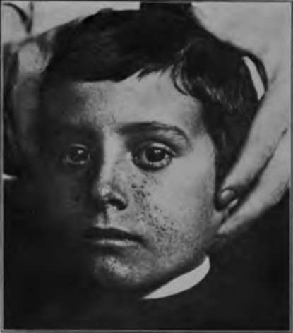

Adenoma Sebaceum
Description
This section is from the book "Skin Cancer", by Henry H. Hazen, A.B., M.D.. Also available from Amazon: Skin Cancer.
Adenoma Sebaceum
According to Sutton, Rayer* was the first to describe adenoma sebaceum, calling it "Vegetations vasculaires." A few years laterAddison and Gull* considered it to be a lichen. In 1890 Pringle* accurately described the histology of the lesions, and typical cases are often called the "Pringle type" of adenoma sebaceum.
**Tfirok: Monatshefte f. prakt. Dermat.. 1892, xiv. 185. " Schidachi: Arch. f. Dermat. u. Syphil.. 1907. lxxxlii, 3. "Stockmann: Arch. f. Dermat. u. Syphil., 1908. xlli, 146. M Rayer: Rayer's Treatise, 2d ed.. Willis's Translation. 996.
Clinical Course
The lesions are not often seen in private practice, and are only exceptionally encountered in the dispensary, but Crocker* states that in insane asylums plenty of them can be observed. The lesions are discrete, red nodules, varying in size from 1 to 9 mm., and situated upon sides of the nose and the adjacent portions of the cheeks (Fig. 45). They may, however, be scattered upon any other portion of the face. The surface capillaries are dilated, thus giving the bright red color. The lesions tend to run in families, just as the above described conditions do. A low grade of mental development not infrequently accompanies the cutaneous condition. Poor considers that there is another type of adenoma sebaceum, in which the eruption is asymmetrical, and the lesions tend to coalesce. Krzystalowicz considers that there arc two pathological varieties-one a true hypertrophy of the sebaceous glands, which may undergo degeneration, and a second which seems to include pathological deviations.
Fig. 45.-Adenoma sebaceum. (Author's collection).
*Addison and Gull: Guy's Hospital Reports, scr. 2. vil, 267. "Pringle: Brit. Jour. Dermat.. 1890, xll. 1. "Crocker: Diseases of the Skin.
Pathology
In a recent case of Sutton's, two tumors were excised, and his report is appended in a somewhat abbreviated form. The smaller growth was made up of two imperfectly formed and empty hair follicles, with subjoined masses of enormously hyper-trophied sebaceous glands, the larger of which connected directly with the surface. The cells and nuclei stained clearly and well. Two of the larger masses of glandular tissue were divided into separate lobules by fine, fibrous septa. The larger tumor more nearly fulfilled Unna's requirements for a true steatadenoma (a benign tumor-like growth of irregular formation, proceeding from the epithelium of the sebaceous glands, in the outgrowth of which fatty, but no colloid metamorphosis, takes place). Surrounding the lower third of an abortive hair follicle were numerous small, oval, or irregularly oval collections of sebaceous glands. No horny pearls or colloid substance was found. The individual cells in the sebaceous masses were smaller and less plump than those observed in the growth described above, and the number of the lobules was increased threefold. To sum up, in one growth there was a hypertrophy of the sebaceous tissue, and in the other the formation of new glands.
Fig. 46.-Molluscum contaglosum. (Author's collection).
In one case that the author has personally studied the sebaceous glands were but very slightly hypertrophied, the blood vessels were dilated, and there was considerable perivascular infiltration in the upper portion of the corium.
Atypical Multiple Growths
The above descriptions are characteristic of the typical growths, but various authors have described various atypical multiple growths of a benign nature, and clearly of an epithelial origin. Hartzell* has reported a unique neoplasm which resembled both the multiple benign cystic epithelioma and the syringocystadenoma, and which may have been a combination of the two. Ormsby* has reported a case of comparatively large tumors in which spontaneous involution took place, and which clearly sprang from the sweat ducts, which were filled with and surrounded by thick masses of epithelial cells.
Diagnosis
There are comparatively few conditions which simulate these multiple benign epithelial growths. One condition that must be excluded is molluscum contagiosum (Fig. 46) and another colloid milium. The former of these comes on suddenly, and often occurs in epidemics. There is a marked central depression, and, on opening, gelatinous material can be squeezed out. Colloid milium usually develops upon the upper part of the face, there is no dilatation of the surface capillaries, and the lesions are distinctly yellowish in color.
Prognosis
The prognosis is good so far as life is concerned, but the lesions persist indefinitely.
Treatment
All of these tumors can be removed by the knife, curette, caustics, electrolysis, and at times by the x-ray. Personally, the author prefers the electric needle.
*Hartzell: Brit. Jour. Dermat., 1904, xvi, 361.
*Ormsby: Jour. Cutan. Dis., 1910, xxviii, 433.
Continue to:
- prev: Syringocystadenoma
- Table of Contents
- next: Chapter IX. Nevocarcinomata And Malignant Melanomata (Malignant Pigmented Moles)
Tags
bookdome.com, books, online, free, old, antique, new, read, browse, download